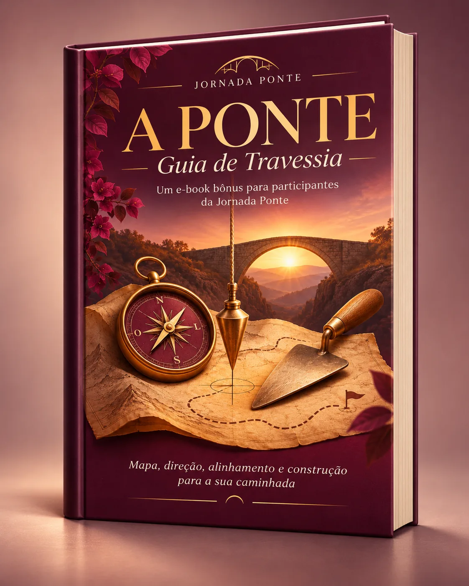

Menos cobrança
Um processo sem metas de perfeição e sem pressão para compartilhar intimidades.
Uma jornada guiada de 5 semanas para reconhecer onde você está, cuidar do presente e criar passos possíveis para uma vida com mais sentido — no seu ritmo.
TALVEZ ESTE SEJA O SEU MOMENTO
Há momentos em que o calendário continua avançando, mas alguma parte de nós pede uma pausa. Entre responsabilidades, expectativas e mudanças, pode ser difícil escutar o que realmente importa.
A PONTE nasce para oferecer espaço. Não para exigir uma transformação extraordinária — mas para acompanhar uma travessia feita de atenção, conversas, práticas simples e decisões possíveis.
Conheça o caminho que propomosUm processo sem metas de perfeição e sem pressão para compartilhar intimidades.
Práticas breves e adaptáveis para reconhecer necessidades e cultivar atenção.
Pequenos experimentos, vínculos e um plano de continuidade conectado à vida real.
UMA TRAVESSIA ENTRE CICLOS
Talvez baste começar com uma pergunta mais gentil: do que eu preciso agora?
02 / NOSSO PERCURSO
O Método PONTE organiza a experiência em cinco passos de aprendizagem e autocuidado, inspirados nos movimentos da Teoria U, de Otto Scharmer — em uma aplicação educativa própria, não clínica.
Reconhecer seu ponto de partida, acolher necessidades e criar espaço para uma intenção de cuidado.
Perceber corpo, emoções, vínculos e contexto com curiosidade, sem precisar corrigir tudo.
Cultivar presença e reconhecer seus valores, recursos e aquilo que deseja preservar.
Experimentar pequenos passos, ensaiar limites e ajustar caminhos com gentileza.
Fortalecer sua rede de apoio e desenhar um plano viável para os próximos 30 dias.
03 / A EXPERIÊNCIA
Durante cinco semanas, aulas, exercícios e encontros se conectam à rotina. Você participa com liberdade para adaptar seu ritmo e escolher o quanto deseja compartilhar.
E aulas gravadas na plataforma, para acompanhar e revisitar os conteúdos no seu ritmo.
APRENDER + EXPERIMENTAR35 propostas reflexivas com duração sugerida de 5 a 15 minutos, sempre adaptáveis.
UM DIA DE CADA VEZUm espaço coletivo de aprendizagem, respeito e pertencimento durante a jornada.
CUIDAR EM CONEXÃO12 meses de acesso ao Projeto INSPIRA, incluídos nas duas modalidades.
CONTINUIDADE COM SENTIDOQuem escolher o Círculo de Mulheres participa também de 5 vivências presenciais de 90 minutos em Piracicaba, além de todo o programa online.
UM CONVITE, NÃO UMA EXIGÊNCIA
A proposta não é apagar o que aconteceu ou prometer que tudo ficará resolvido em cinco semanas. É construir um espaço de aprendizagem e cuidado para atravessar o presente com mais consciência e apoio.
Quero conhecer as modalidades04 / A SUA ESCOLHA
Duas formas de viver A PONTE. A modalidade online é aberta a adultos de todos os gêneros; a experiência presencial é um Círculo de Mulheres em Piracicaba.
Para quem deseja viver a experiência com profundidade, de qualquer lugar.
Em breve, o CHECKOUT estará liberado, com CUPOM de desconto. Entre no grupo e receba os insights e o aviso da abertura.
Uma experiência em grupo para mulheres que desejam se encontrar presencialmente.
Em breve, o CHECKOUT estará liberado, com CUPOM de desconto. Entre no grupo e receba os insights e o aviso da abertura.
Os valores exibidos são propostas de planejamento, não uma oferta com checkout ativo. A abertura das inscrições depende de confirmação de datas, local, equipe, condições de participação e pagamentos. Não há compra ou coleta de dados neste site neste momento.
BÔNUS, COMUNIDADE E AVISOS IMPORTANTES
Esta é a comunidade onde compartilho conteúdos terapêuticos muito relevantes e onde também irei publicar novidades sobre a Jornada A PONTE.
É nesse grupo que avisarei a liberação do checkout, além de informações sobre datas, orientações e próximos passos para quem deseja participar da jornada.

E-BOOK BÔNUS PARA PARTICIPANTES
A PONTE — Guia de Travessia é um presente especial para quem decidir viver esta experiência. Um material criado para ajudar você a reconhecer onde está, perceber sua direção e construir passos mais conscientes para a sua caminhada.
Por meio de quatro símbolos — o mapa, a bússola, o prumo e a colher de pedreiro —, o e-book oferece uma leitura breve, profunda e inspiradora sobre autoconhecimento, alinhamento e reconstrução pessoal.
Talvez você não precise de um novo destino. Talvez precise de uma nova maneira de atravessar.
05 / QUEM CONDUZ
Me chamo André Schuindt, e atuo como terapeuta psicanalista há quase 10 anos ajudando pessoas e grupos no desenvolvimento de saúde mental e social. Idealizei essa Jornada A PONTE a partir da minha atuação terapêutica e atividades educativas, mediação de leitura, experiências de cuidado, atenção plena e conexão humana.
Esta proposta reúne uma metodologia terapêutica e psicossocial de cinco movimentos e práticas acessíveis, com respeito aos limites de cada participante. As formações específicas, a equipe de apoio e o calendário serão apresentados antes da abertura das inscrições.
Conheça @soualmacuidada06 / ANTES DE ATRAVESSAR
Transparência faz parte da experiência. Aqui estão os pontos essenciais para escolher com tranquilidade.
QUANDO VOCÊ ESTIVER PRONTO PARA DAR O PRIMEIRO PASSO
Você não precisa ter tudo resolvido. Precisa apenas encontrar um caminho que faça sentido para você.
Conhecer A PONTE 5 SEMANAS · UM DIA DE CADA VEZ